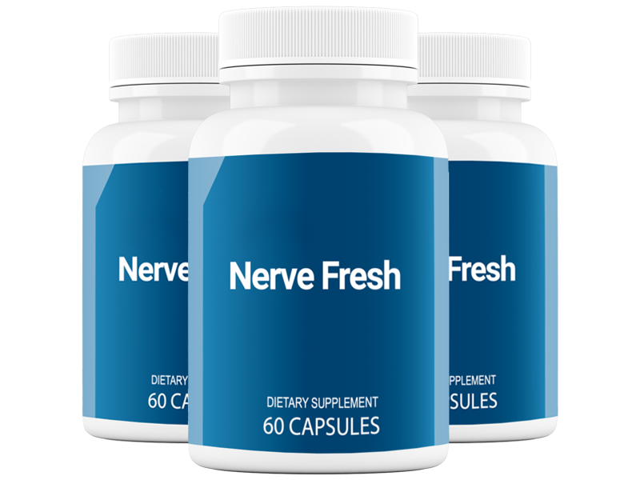
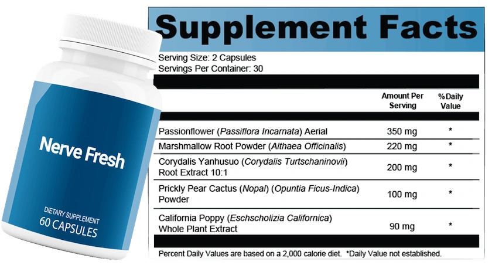
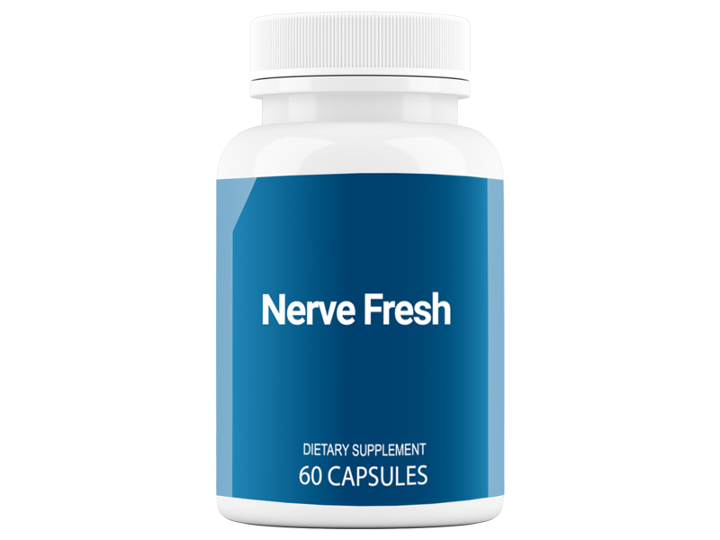
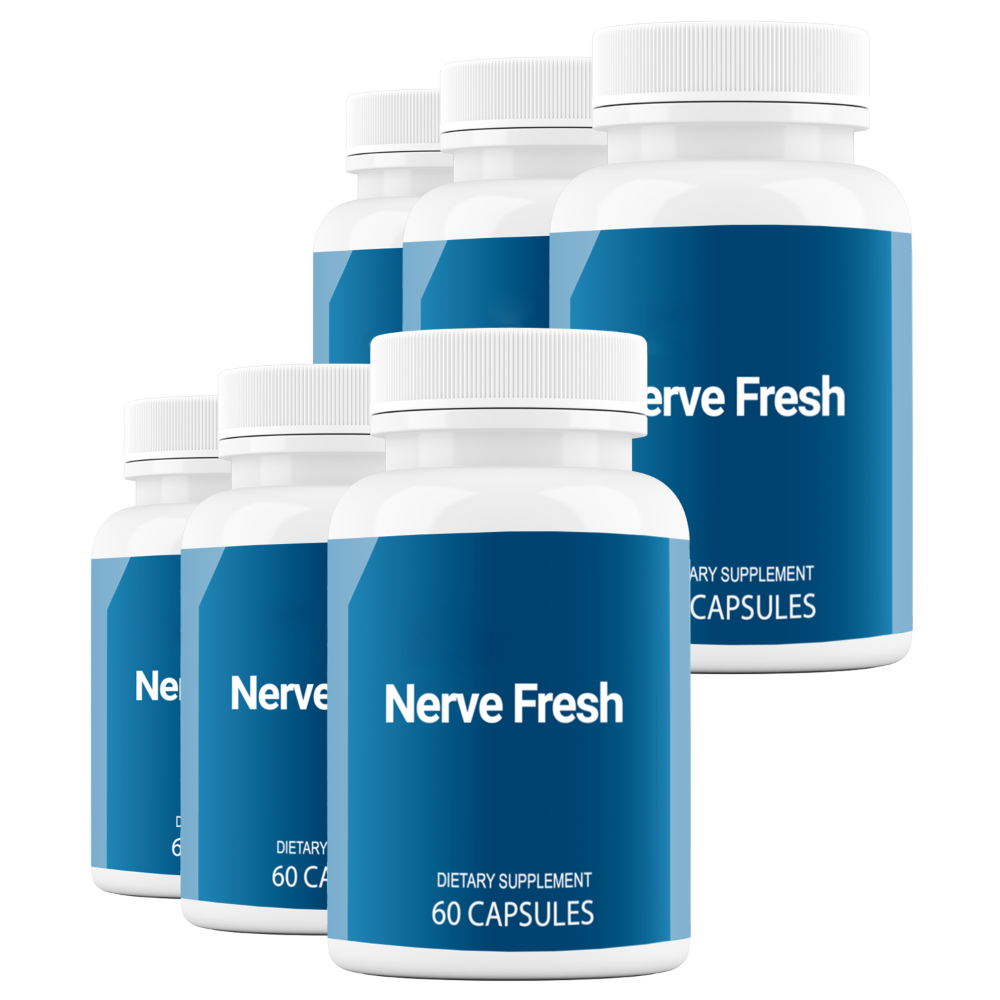

Simple Format
The label lists a serving size of two capsules, with 30 servings per container.
If you are researching Nerve Fresh before ordering, this independent review breaks down the label, serving size, current package pricing, advantages, limitations and the details worth checking first.
Check Current Nerve Fresh Offer →
It may be worth comparing if you prefer a botanical capsule formula and want the ingredient amounts clearly shown. The label gives individual amounts for five ingredients, which makes the formula easier to evaluate than a proprietary blend. The bigger questions are whether the ingredient profile fits your needs and whether the current seller terms make sense for you.
Nerve Fresh is sold as a dietary supplement aimed at people researching nerve-support wellness. Each bottle shown contains 60 capsules. Rather than relying on vague ingredient marketing, the most useful place to start is the Supplement Facts panel.
The label lists a serving size of two capsules, with 30 servings per container.
The panel lists passionflower, marshmallow root, corydalis, prickly pear cactus and California poppy.
Each of the five listed ingredients has an individual amount instead of being hidden inside one combined proprietary-blend total.

The label image lists a serving size of 2 capsules and 30 servings per container. The five listed botanical ingredients and amounts are:
| Ingredient | Amount per serving |
|---|---|
| Passionflower aerial | 350 mg |
| Marshmallow Root Powder | 220 mg |
| Corydalis Yanhusuo Root Extract 10:1 | 200 mg |
| Prickly Pear Cactus Powder | 100 mg |
| California Poppy Whole Plant Extract | 90 mg |
At the time this review was prepared, the seller displayed three package sizes. Because online offers can change, confirm the live total on the seller's page before purchasing.


We did not find a complete adverse-event profile in the affiliate materials supplied for this review, so it would be misleading to promise that side effects cannot occur.
Check every ingredient if you have allergies, sensitivities or use other supplements.
If you take prescription medication, are pregnant or nursing, or manage a medical condition, discuss the ingredient list with an appropriate healthcare professional before use.
Nerve Fresh is a 60-capsule dietary supplement marketed for nerve-support wellness. This page is an independent affiliate review and does not represent the manufacturer.
The Supplement Facts image lists passionflower, marshmallow root powder, corydalis root extract, prickly pear cactus powder and California poppy whole plant extract.
The label lists 350 mg passionflower, 220 mg marshmallow root powder, 200 mg corydalis extract, 100 mg prickly pear cactus powder and 90 mg California poppy per 2-capsule serving.
The bottle label states 60 capsules. The Supplement Facts panel lists 30 servings per container at two capsules per serving.
The seller page checked for this review showed $69 for one bottle, $177 for three bottles and $234 for six bottles. Online pricing can change, so verify the live offer before ordering.
The materials reviewed do not provide a complete side-effect profile. Botanical ingredients can still interact with medications or be unsuitable for some people, so review the full label and seek appropriate medical advice when relevant.
Nerve Fresh is a dietary supplement. This independent page does not present it as a treatment, cure or replacement for medical care for neuropathy or other conditions.
Use any yellow button on this page to visit the seller's current Nerve Fresh page and verify pricing, stock, shipping and refund terms.
Its strongest practical point is transparency: five botanical ingredients are listed with individual amounts, and the product comes in a straightforward capsule format. Whether it is right for you depends on your goals, health context and comfort with the formula. Check the current seller page before ordering because prices and guarantee terms can change.
View Current Nerve Fresh Offer →